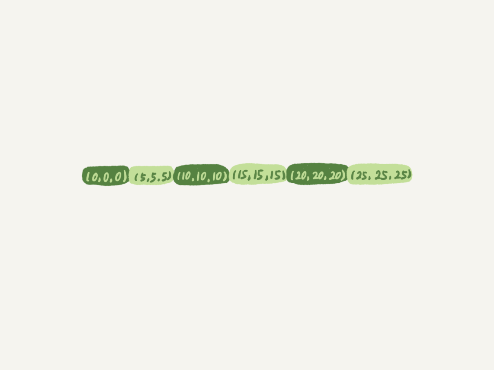
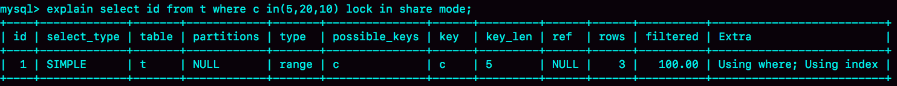
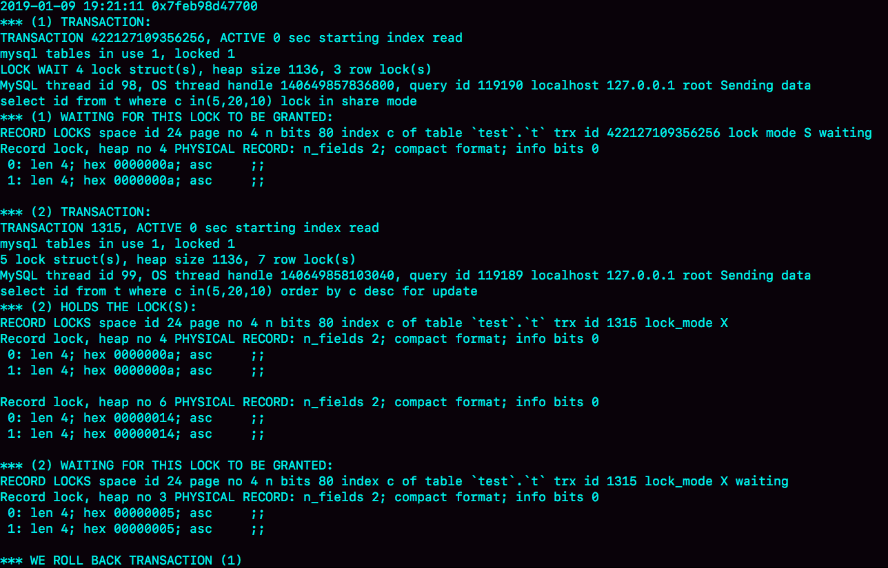
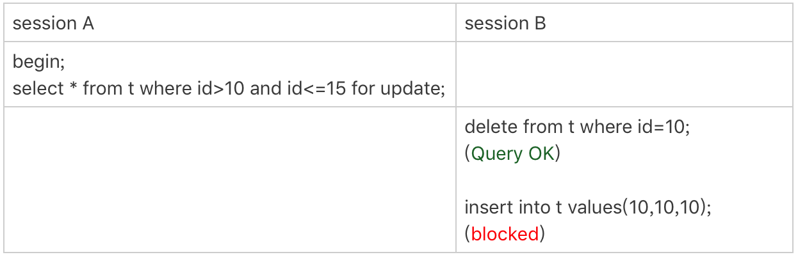
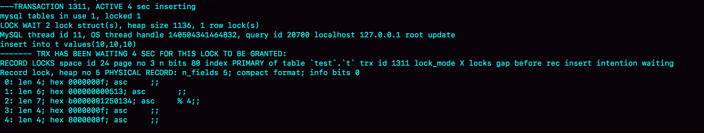
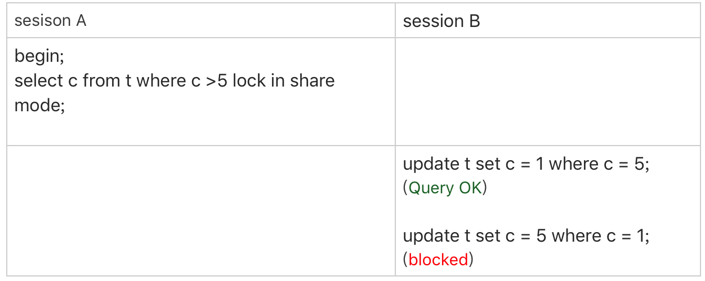
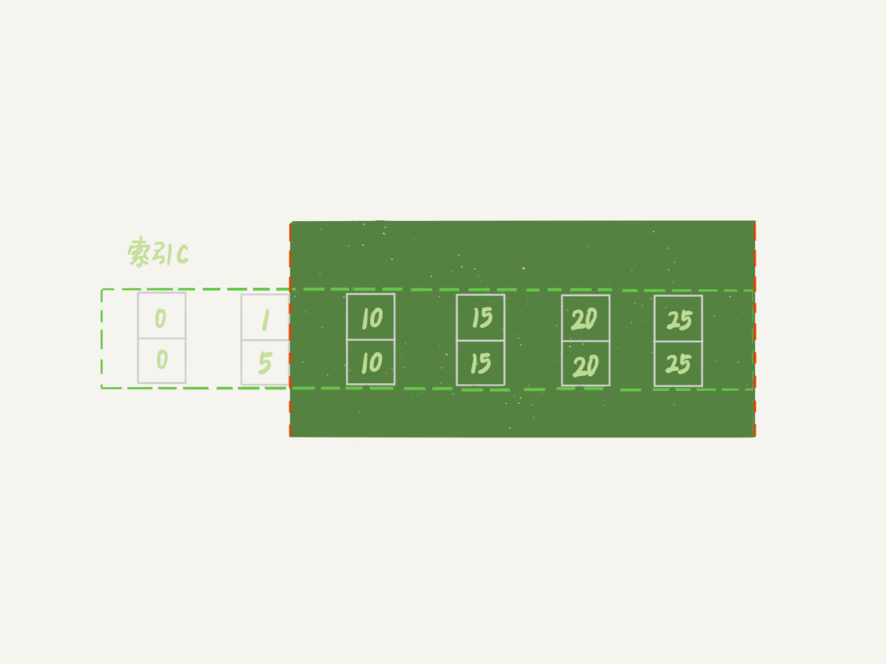

- 00 开篇词 这一次，让我们一起来搞懂MySQL.md.html
- 01 基础架构：一条SQL查询语句是如何执行的？.md.html
- 02 日志系统：一条SQL更新语句是如何执行的？.md.html
- 03 事务隔离：为什么你改了我还看不见？.md.html
- 04 深入浅出索引（上）.md.html
- 05 深入浅出索引（下）.md.html
- 06 全局锁和表锁 ：给表加个字段怎么有这么多阻碍？.md.html
- 07 行锁功过：怎么减少行锁对性能的影响？.md.html
- 08 事务到底是隔离的还是不隔离的？.md.html
- 09 普通索引和唯一索引，应该怎么选择？.md.html
- 10 MySQL为什么有时候会选错索引？.md.html
- 11 怎么给字符串字段加索引？.md.html
- 12 为什么我的MySQL会“抖”一下？.md.html
- 13 为什么表数据删掉一半，表文件大小不变？.md.html
- 14 count()这么慢，我该怎么办？.md.html
- 15 答疑文章（一）：日志和索引相关问题.md.html
- 16 “order by”是怎么工作的？.md.html
- 17 如何正确地显示随机消息？.md.html
- 18 为什么这些SQL语句逻辑相同，性能却差异巨大？.md.html
- 19 为什么我只查一行的语句，也执行这么慢？.md.html
- 20 幻读是什么，幻读有什么问题？.md.html
- 21 为什么我只改一行的语句，锁这么多？.md.html
- 22 MySQL有哪些“饮鸩止渴”提高性能的方法？.md.html
- 23 MySQL是怎么保证数据不丢的？.md.html
- 24 MySQL是怎么保证主备一致的？.md.html
- 25 MySQL是怎么保证高可用的？.md.html
- 26 备库为什么会延迟好几个小时？.md.html
- 27 主库出问题了，从库怎么办？.md.html
- 28 读写分离有哪些坑？.md.html
- 29 如何判断一个数据库是不是出问题了？.md.html
- 30 答疑文章（二）：用动态的观点看加锁.md.html
- 31 误删数据后除了跑路，还能怎么办？.md.html
- 32 为什么还有kill不掉的语句？.md.html
- 33 我查这么多数据，会不会把数据库内存打爆？.md.html
- 34 到底可不可以使用join？.md.html
- 35 join语句怎么优化？.md.html
- 36 为什么临时表可以重名？.md.html
- 37 什么时候会使用内部临时表？.md.html
- 38 都说InnoDB好，那还要不要使用Memory引擎？.md.html
- 39 自增主键为什么不是连续的？.md.html
- 40 insert语句的锁为什么这么多？.md.html
- 41 怎么最快地复制一张表？.md.html
- 42 grant之后要跟着flush privileges吗？.md.html
- 43 要不要使用分区表？.md.html
- 44 答疑文章（三）：说一说这些好问题.md.html
- 45 自增id用完怎么办？.md.html
- 我的MySQL心路历程.md.html
- 结束语 点线网面，一起构建MySQL知识网络.md.html
- 捐赠
30 答疑文章（二）：用动态的观点看加锁
在第[20]和[21]篇文章中，我和你介绍了 InnoDB 的间隙锁、next-key lock，以及加锁规则。在这两篇文章的评论区，出现了很多高质量的留言。我觉得通过分析这些问题，可以帮助你加深对加锁规则的理解。
所以，我就从中挑选了几个有代表性的问题，构成了今天这篇答疑文章的主题，即：用动态的观点看加锁。
为了方便你理解，我们再一起复习一下加锁规则。这个规则中，包含了两个“原则”、两个“优化”和一个“bug”：
- 原则 1：加锁的基本单位是 next-key lock。希望你还记得，next-key lock 是前开后闭区间。
- 原则 2：查找过程中访问到的对象才会加锁。
- 优化 1：索引上的等值查询，给唯一索引加锁的时候，next-key lock 退化为行锁。
- 优化 2：索引上的等值查询，向右遍历时且最后一个值不满足等值条件的时候，next-key lock 退化为间隙锁。
- 一个 bug：唯一索引上的范围查询会访问到不满足条件的第一个值为止。
接下来，我们的讨论还是基于下面这个表 t：
CREATE TABLE `t` (
`id` int(11) NOT NULL,
`c` int(11) DEFAULT NULL,
`d` int(11) DEFAULT NULL,
PRIMARY KEY (`id`),
KEY `c` (`c`)
) ENGINE=InnoDB;
insert into t values(0,0,0),(5,5,5),
(10,10,10),(15,15,15),(20,20,20),(25,25,25);
不等号条件里的等值查询
有同学对“等值查询”提出了疑问：等值查询和“遍历”有什么区别？为什么我们文章的例子里面，where 条件是不等号，这个过程里也有等值查询？
我们一起来看下这个例子，分析一下这条查询语句的加锁范围：
begin;
select * from t where id>9 and id<12 order by id desc for update;
利用上面的加锁规则，我们知道这个语句的加锁范围是主键索引上的 (0,5]、(5,10] 和 (10, 15)。也就是说，id=15 这一行，并没有被加上行锁。为什么呢？
我们说加锁单位是 next-key lock，都是前开后闭区间，但是这里用到了优化 2，即索引上的等值查询，向右遍历的时候 id=15 不满足条件，所以 next-key lock 退化为了间隙锁 (10, 15)。
但是，我们的查询语句中 where 条件是大于号和小于号，这里的“等值查询”又是从哪里来的呢？
要知道，加锁动作是发生在语句执行过程中的，所以你在分析加锁行为的时候，要从索引上的数据结构开始。这里，我再把这个过程拆解一下。
如图 1 所示，是这个表的索引 id 的示意图。

图 1 索引 id 示意图
- 首先这个查询语句的语义是 order by id desc，要拿到满足条件的所有行，优化器必须先找到“第一个 id<12 的值”。
- 这个过程是通过索引树的搜索过程得到的，在引擎内部，其实是要找到 id=12 的这个值，只是最终没找到，但找到了 (10,15) 这个间隙。
- 然后向左遍历，在遍历过程中，就不是等值查询了，会扫描到 id=5 这一行，所以会加一个 next-key lock (0,5]。
也就是说，在执行过程中，通过树搜索的方式定位记录的时候，用的是“等值查询”的方法。
等值查询的过程
与上面这个例子对应的，是 @发条橙子同学提出的问题：下面这个语句的加锁范围是什么？
begin;
select id from t where c in(5,20,10) lock in share mode;
这条查询语句里用的是 in，我们先来看这条语句的 explain 结果。 
图 2 in 语句的 explain 结果
可以看到，这条 in 语句使用了索引 c 并且 rows=3，说明这三个值都是通过 B+ 树搜索定位的。
在查找 c=5 的时候，先锁住了 (0,5]。但是因为 c 不是唯一索引，为了确认还有没有别的记录 c=5，就要向右遍历，找到 c=10 才确认没有了，这个过程满足优化 2，所以加了间隙锁 (5,10)。
同样的，执行 c=10 这个逻辑的时候，加锁的范围是 (5,10] 和 (10,15)；执行 c=20 这个逻辑的时候，加锁的范围是 (15,20] 和 (20,25)。
通过这个分析，我们可以知道，这条语句在索引 c 上加的三个记录锁的顺序是：先加 c=5 的记录锁，再加 c=10 的记录锁，最后加 c=20 的记录锁。
你可能会说，这个加锁范围，不就是从 (5,25) 中去掉 c=15 的行锁吗？为什么这么麻烦地分段说呢？
因为我要跟你强调这个过程：这些锁是“在执行过程中一个一个加的”，而不是一次性加上去的。
理解了这个加锁过程之后，我们就可以来分析下面例子中的死锁问题了。
如果同时有另外一个语句，是这么写的：
select id from t where c in(5,20,10) order by c desc for update;
此时的加锁范围，又是什么呢？
我们现在都知道间隙锁是不互锁的，但是这两条语句都会在索引 c 上的 c=5、10、20 这三行记录上加记录锁。
这里你需要注意一下，由于语句里面是 order by c desc， 这三个记录锁的加锁顺序，是先锁 c=20，然后 c=10，最后是 c=5。
也就是说，这两条语句要加锁相同的资源，但是加锁顺序相反。当这两条语句并发执行的时候，就可能出现死锁。
关于死锁的信息，MySQL 只保留了最后一个死锁的现场，但这个现场还是不完备的。
有同学在评论区留言到，希望我能展开一下怎么看死锁。现在，我就来简单分析一下上面这个例子的死锁现场。
怎么看死锁？
图 3 是在出现死锁后，执行 show engine innodb status 命令得到的部分输出。这个命令会输出很多信息，有一节 LATESTDETECTED DEADLOCK，就是记录的最后一次死锁信息。 
图 3 死锁现场
我们来看看这图中的几个关键信息。
- 这个结果分成三部分：
- (1) TRANSACTION，是第一个事务的信息；
- (2) TRANSACTION，是第二个事务的信息；
- WE ROLL BACK TRANSACTION (1)，是最终的处理结果，表示回滚了第一个事务。
- 第一个事务的信息中：
- WAITING FOR THIS LOCK TO BE GRANTED，表示的是这个事务在等待的锁信息；
- index c of table
test.t，说明在等的是表 t 的索引 c 上面的锁； - lock mode S waiting 表示这个语句要自己加一个读锁，当前的状态是等待中；
- Record lock 说明这是一个记录锁；
- n_fields 2 表示这个记录是两列，也就是字段 c 和主键字段 id；
- 0: len 4; hex 0000000a; asc ;; 是第一个字段，也就是 c。值是十六进制 a，也就是 10；
- 1: len 4; hex 0000000a; asc ;; 是第二个字段，也就是主键 id，值也是 10；
- 这两行里面的 asc 表示的是，接下来要打印出值里面的“可打印字符”，但 10 不是可打印字符，因此就显示空格。
- 第一个事务信息就只显示出了等锁的状态，在等待 (c=10,id=10) 这一行的锁。
- 当然你是知道的，既然出现死锁了，就表示这个事务也占有别的锁，但是没有显示出来。别着急，我们从第二个事务的信息中推导出来。
- 第二个事务显示的信息要多一些：
- “ HOLDS THE LOCK(S)”用来显示这个事务持有哪些锁；
- index c of table
test.t表示锁是在表 t 的索引 c 上； - hex 0000000a 和 hex 00000014 表示这个事务持有 c=10 和 c=20 这两个记录锁；
- WAITING FOR THIS LOCK TO BE GRANTED，表示在等 (c=5,id=5) 这个记录锁。
从上面这些信息中，我们就知道：
- “lock in share mode”的这条语句，持有 c=5 的记录锁，在等 c=10 的锁；
- “for update”这个语句，持有 c=20 和 c=10 的记录锁，在等 c=5 的记录锁。
因此导致了死锁。这里，我们可以得到两个结论：
- 由于锁是一个个加的，要避免死锁，对同一组资源，要按照尽量相同的顺序访问；
- 在发生死锁的时刻，for update 这条语句占有的资源更多，回滚成本更大，所以 InnoDB 选择了回滚成本更小的 lock in share mode 语句，来回滚。
怎么看锁等待？
看完死锁，我们再来看一个锁等待的例子。
在第 21 篇文章的评论区，@Geek_9ca34e 同学做了一个有趣验证，我把复现步骤列出来：

图 4 delete 导致间隙变化
可以看到，由于 session A 并没有锁住 c=10 这个记录，所以 session B 删除 id=10 这一行是可以的。但是之后，session B 再想 insert id=10 这一行回去就不行了。
现在我们一起看一下此时 show engine innodb status 的结果，看看能不能给我们一些提示。锁信息是在这个命令输出结果的 TRANSACTIONS 这一节。你可以在文稿中看到这张图片 
图 5 锁等待信息
我们来看几个关键信息。
- index PRIMARY of table
test.t，表示这个语句被锁住是因为表 t 主键上的某个锁。 - lock_mode X locks gap before rec insert intention waiting 这里有几个信息：
- insert intention 表示当前线程准备插入一个记录，这是一个插入意向锁。为了便于理解，你可以认为它就是这个插入动作本身。
- gap before rec 表示这是一个间隙锁，而不是记录锁。
- 那么这个 gap 是在哪个记录之前的呢？接下来的 0~4 这 5 行的内容就是这个记录的信息。
- n_fields 5 也表示了，这一个记录有 5 列：
- 0: len 4; hex 0000000f; asc ;; 第一列是主键 id 字段，十六进制 f 就是 id=15。所以，这时我们就知道了，这个间隙就是 id=15 之前的，因为 id=10 已经不存在了，它表示的就是 (5,15)。
- 1: len 6; hex 000000000513; asc ;; 第二列是长度为 6 字节的事务 id，表示最后修改这一行的是 trx id 为 1299 的事务。
- 2: len 7; hex b0000001250134; asc % 4;; 第三列长度为 7 字节的回滚段信息。可以看到，这里的 acs 后面有显示内容 (% 和 4)，这是因为刚好这个字节是可打印字符。
- 后面两列是 c 和 d 的值，都是 15。
因此，我们就知道了，由于 delete 操作把 id=10 这一行删掉了，原来的两个间隙 (5,10)、(10,15）变成了一个 (5,15)。
说到这里，你可以联合起来再思考一下这两个现象之间的关联：
- session A 执行完 select 语句后，什么都没做，但它加锁的范围突然“变大”了；
- 第 21 篇文章的课后思考题，当我们执行 select * from t where c>=15 and c<=20 order by c desc lock in share mode; 向左扫描到 c=10 的时候，要把 (5, 10] 锁起来。
也就是说，所谓“间隙”，其实根本就是由“这个间隙右边的那个记录”定义的。
update 的例子
看过了 insert 和 delete 的加锁例子，我们再来看一个 update 语句的案例。在留言区中 @信信 同学做了这个试验：

图 6 update 的例子
你可以自己分析一下，session A 的加锁范围是索引 c 上的 (5,10]、(10,15]、(15,20]、(20,25] 和 (25,supremum]。
注意：根据 c>5 查到的第一个记录是 c=10，因此不会加 (0,5] 这个 next-key lock。
之后 session B 的第一个 update 语句，要把 c=5 改成 c=1，你可以理解为两步：
- 插入 (c=1, id=5) 这个记录；
- 删除 (c=5, id=5) 这个记录。
按照我们上一节说的，索引 c 上 (5,10) 间隙是由这个间隙右边的记录，也就是 c=10 定义的。所以通过这个操作，session A 的加锁范围变成了图 7 所示的样子： 
图 7 session B 修改后， session A 的加锁范围
好，接下来 session B 要执行 update t set c = 5 where c = 1 这个语句了，一样地可以拆成两步：
- 插入 (c=5, id=5) 这个记录；
- 删除 (c=1, id=5) 这个记录。
第一步试图在已经加了间隙锁的 (1,10) 中插入数据，所以就被堵住了。
小结
今天这篇文章，我用前面[第 20]和[第 21 篇]文章评论区的几个问题，再次跟你复习了加锁规则。并且，我和你重点说明了，分析加锁范围时，一定要配合语句执行逻辑来进行。
在我看来，每个想认真了解 MySQL 原理的同学，应该都要能够做到：通过 explain 的结果，就能够脑补出一个 SQL 语句的执行流程。达到这样的程度，才算是对索引组织表、索引、锁的概念有了比较清晰的认识。你同样也可以用这个方法，来验证自己对这些知识点的掌握程度。
在分析这些加锁规则的过程中，我也顺便跟你介绍了怎么看 show engine innodb status 输出结果中的事务信息和死锁信息，希望这些内容对你以后分析现场能有所帮助。
老规矩，即便是答疑文章，我也还是要留一个课后问题给你的。
上面我们提到一个很重要的点：所谓“间隙”，其实根本就是由“这个间隙右边的那个记录”定义的。
那么，一个空表有间隙吗？这个间隙是由谁定义的？你怎么验证这个结论呢？
你可以把你关于分析和验证方法写在留言区，我会在下一篇文章的末尾和你讨论这个问题。感谢你的收听，也欢迎你把这篇文章分享给更多的朋友一起阅读。
上期问题时间
我在上一篇文章最后留给的问题，是分享一下你关于业务监控的处理经验。
在这篇文章的评论区，很多同学都分享了不错的经验。这里，我就选择几个比较典型的留言，和你分享吧：
- @老杨同志 回答得很详细。他的主要思路就是关于服务状态和服务质量的监控。其中，服务状态的监控，一般都可以用外部系统来实现；而服务的质量的监控，就要通过接口的响应时间来统计。
- @Ryoma 同学，提到服务中使用了 healthCheck 来检测，其实跟我们文中提到的 select 1 的模式类似。
- @强哥 同学，按照监控的对象，将监控分成了基础监控、服务监控和业务监控，并分享了每种监控需要关注的对象。
© 2019 - 2023 Liangliang Lee. Powered by gin and hexo-theme-book.